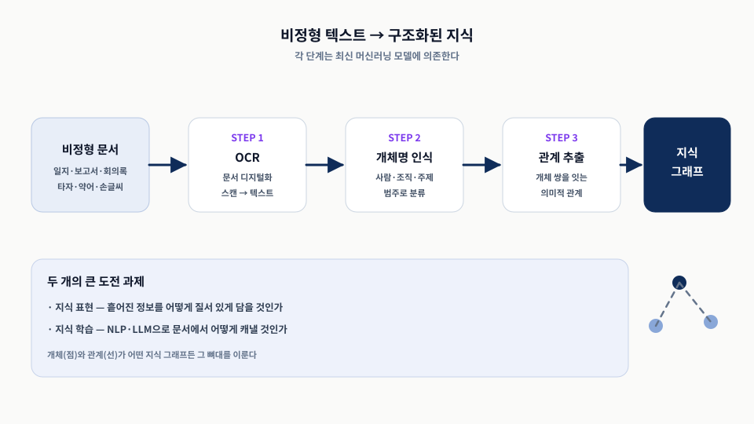
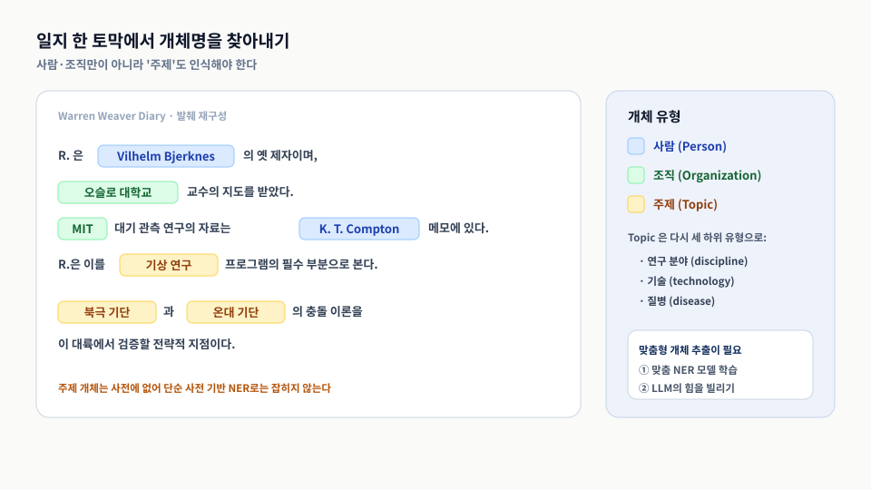
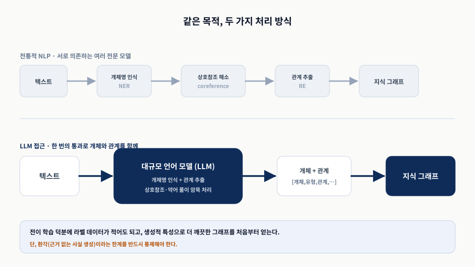
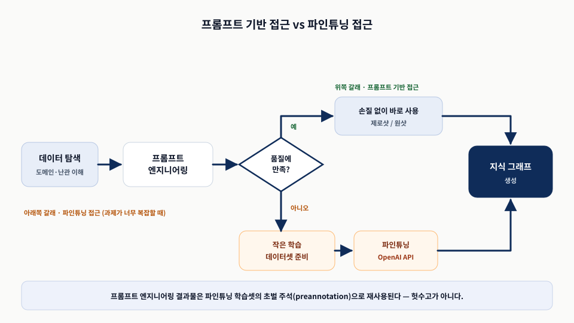
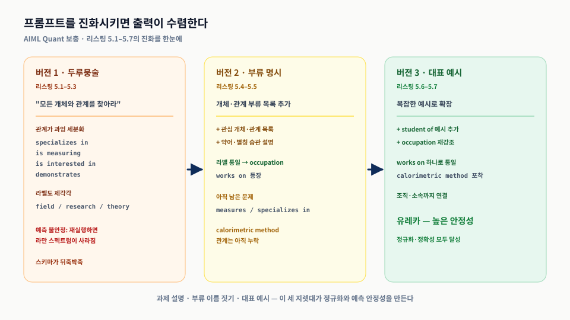
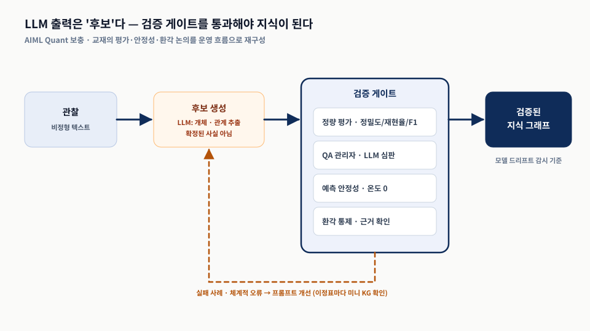

SOURCE PROBLEM
일지는 험한 텍스트다
- 타자·약어·이니셜(“R.”)로 뒤덮임
- 사람·조직뿐 아니라 '주제'가 중요
- 사전 기반 NER로는 잡히지 않음
지식 그래프와 LLM 실전 · Chapter 5
일지처럼 험한 비정형 텍스트에서 개체와 관계를 뽑아 검증 가능한 지식 그래프의 재료를 만든다
기업 데이터의 80~90%는 비정형 텍스트다. 이 장은 그중 록펠러 아카이브의 일지에서 지식을 캐낸다.
SOURCE PROBLEM
TWO PILLARS
오늘의 결론 — LLM 출력은 '후보'다. 프롬프트 반복과 평가로 검증해야 지식이 된다.
아카이브라는 무대에서 출발해, 개체·관계 추출을 거쳐 LLM 활용과 판단으로 마무리한다.
RAC 일지라는 비정형 데이터의 도전을 이해한다.
개체(NER)와 관계(RE)를 정의한다.
프롬프트로 개체·관계를 한 번에 뽑는다.
언제 무엇을 쓰고 어떻게 검증할지 정한다.
발표의 약속 — 특정 모델의 세부보다 오래 통하는 원리로 읽는다.
SECTION 5.1
연구비 결정의 무대 뒤를 그래프로 밝혀낸다
5.1OCR로 디지털화하고, 개체명 인식과 관계 추출을 거쳐 지식 그래프에 이른다. 지식 표현과 지식 학습이 두 도전이다.

담당관들은 회의·전화·저녁 자리의 대화를 약어와 전문 용어로 일지에 적었다. 이 '보물 창고'가 원자료다.
지원 전에 앞서 나타나는 패턴이 있는가?
영향력 있는 과학자의 추천을 따르는가?
확정까지 논의가 몇 번 오가는가?
하위 분야 지원은 시간에 따라 변하는가?
핵심 — 5장은 '추출', 6장은 이 정보로 그래프를 만들어 답하는 '구축'이다.
SECTION 5.2
점(개체)과 선(관계)이 그래프의 뼈대다
5.2개체를 찾는 일과 개체를 잇는 관계를 뽑는 일. 서로 맞물린 이 둘이 어떤 지식 그래프든 그 뼈대를 이룬다.
ENTITY
RELATION
기억할 것 — NER은 점을 찾고, RE는 점을 잇는다.
SECTION 5.2.1
일반 범주만으로는 부족하다
5.2.1위버의 일지에는 “대기 관측 연구”, “기상 연구”, “기단” 같은 주제가 나온다. 사전에 없어 단순 NER로는 못 잡는다.

Topic 개체는 연구 분야·기술·질병으로 세분된다. 이런 도메인 특화 범주는 맞춤 추출이 필요하다.
이니셜·약어 지칭(“R.”)이 난관.
축약형(“U. Cal.”) 해소가 필요.
연구 분야·기술·질병 — 사전에 없음.
두 갈래 — ① 맞춤 NER 모델을 학습하거나, ② LLM의 힘을 빌린다.
SECTION 5.2.2
일관성이 그래프의 품질을 만든다
5.2.2“제인 오스틴은 구글에 고용되어 있다”에서 PERSON과 ORGANIZATION을 잇는 관계가 RE의 결과물이다.
SAME FACT
RULE
기억할 것 — 개체(점)에 관계(선)를 더해야 비로소 진정한 지식 그래프다.
SECTION 5.3
여러 전문 모델을 한 번의 통과로 대체한다
5.3전통적 NLP는 여러 전문 모델을 잇지만, LLM은 한 번의 통과로 개체와 관계를 함께 뽑는다.

일반 과제에서 배운 패턴을 재사용해 라벨 데이터를 줄이고, 자연어 프롬프트만으로 과제를 수행한다.
STRENGTH
LIMIT
제안 — LLM에게 품질 높은 개체·관계·속성을 뽑게 해 더 깨끗한 그래프를 만든다.
SECTION 5.3.1
프롬프트 기반과 파인튜닝, 두 갈래
5.3.1데이터 탐색과 프롬프트 엔지니어링을 거쳐 두 갈래로 나뉜다. 프롬프트 작업은 파인튜닝 초벌 주석으로 재사용된다.

SECTION 5.3.2
버전을 거치며 출력이 수렴한다
5.3.2API 호출은 그대로 두고 프롬프트만 바꾼다. 과제 설명 → 부류 명시 → 대표 예시 순서가 정규화를 만든다.
“모든 개체·관계를 찾아라”. 상호참조는 해소되나 관계가 과잉 세분화되고 불안정.
개체·관계 부류 목록 + 약어 설명. occupation으로 통일, works on 등장.
대표 예시 확장(student of). works on 통일, 조직·소속·측정법까지 포착 — 유레카.
설정 — 사실 추출이므로 temperature=0으로 출력을 결정적으로 만든다.
과제 설명·부류 이름 짓기·대표 예시. 버전이 오를수록 관계 라벨이 works on / occupation으로 수렴한다.

SECTION 5.3.3
기술은 낡아도 원칙은 옮겨 간다
5.3.3과제 설명, 부류 이름, 대표 예시, 낮은 온도, 안정성 시험, 평가가 출력 품질을 좌우한다.
Topic → Occupation 개명만으로 결과가 안정됐다.
핵심 관계 유형을 모두 담은 예시를 준다.
정밀도·재현율·F1, QA 관리자 또는 LLM 심판.
빠른 반복으로 안 되면 파인튜닝에 투자.
주의 — 이정표마다 미니 KG를 눈으로 확인해 체계적 실패를 잡는다.
SECTION 5.3.4
둘은 공존하거나 서로를 돕는다
5.3.4보안·대규모 비용·스트리밍 속도를 고려하면 NLP의 자리는 넓다. 둘은 서로의 학습 데이터를 만들 수도 있다.
전통적 NLP
LLM
결론 — “전통적 NLP가 설 자리가 있는가?” → “당연히 있다”.
교재의 환각·안정성·평가 논의를 하나의 운영 흐름으로 묶은 발표자 보강이다. 후보와 사실을 상태로 구분한다.

다음에 답할 수 있으면 Chapter 5의 핵심 구조를 잡은 것이다.
일지의 “주제(Topic)” 개체가 일반 사전 기반 NER로 잡히지 않는 이유는?
프롬프트 버전 1→3에서 관계 라벨이 정규화된 세 지렛대는 무엇인가?
LLM 출력을 지식 그래프로 쓰기 전에 반드시 통과시켜야 할 검증은 무엇인가?
토론 — 우리 도메인에서 “Occupation”처럼 개명이 필요한 두루뭉술한 개체 부류는 무엇인가?